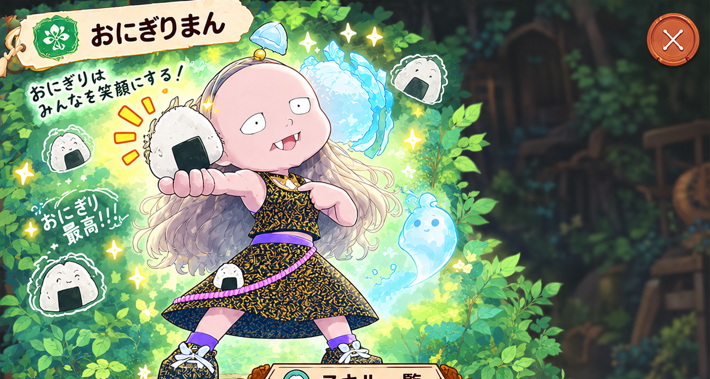
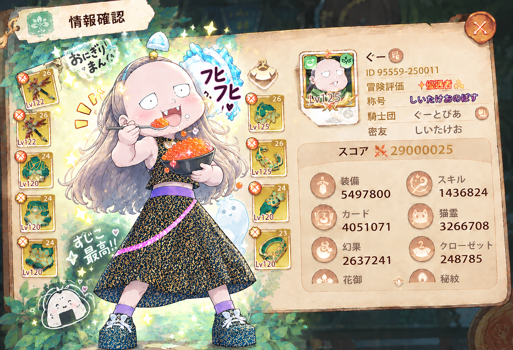
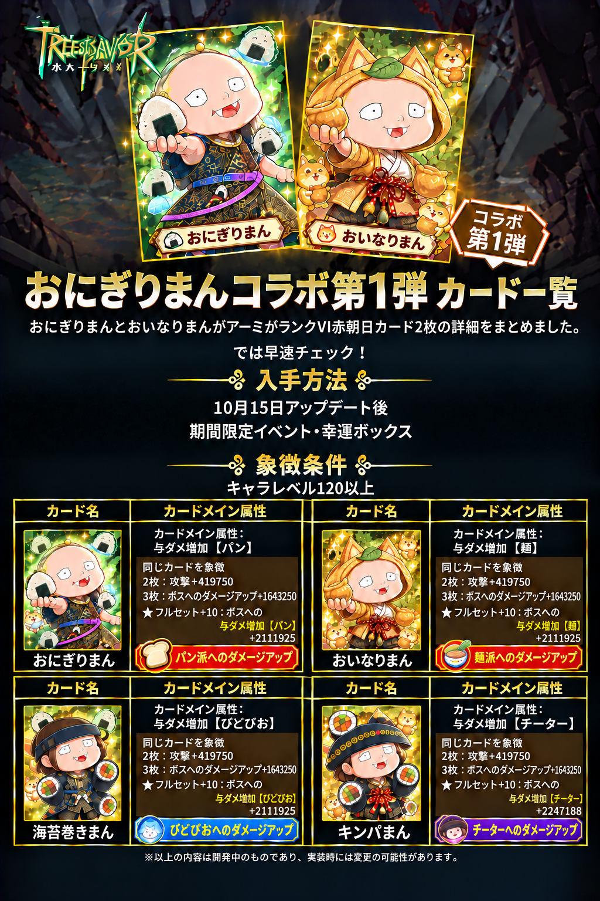

COLLAB ✦ RANK VI
コラボカード図鑑 I
4つの流派とカード効果をチェック。画像を拡大して細部まで楽しもう。
ギルドの仲間から、伝説のおにぎり守護神へ。
回復も爆発もおまかせ。おにぎりひとつで世界を制覇！？
今日もみんなを笑顔にするよ！🍙

小さなおにぎりに、ギルドのみんなの愛とアイデアをぎゅっと詰めて。

もともとは『ツリネバ』で一緒に冒険するギルドメンバー。個性的な見た目とおにぎり愛、仲間たちのAIファンアートによって、いつしかギルドの人気マスコットに進化しました。
まんまるなお顔、ちょこんとした八重歯、ふわふわのロングヘア、黒と金の衣装。そして手放せないおにぎりがトレードマーク。かわいいだけじゃない、おにぎり魔法は超強力！
ギルド発の限定コラボカード！パン派・麺派・海苔巻き派・チート系おにぎりが大集合！
4つの流派とカード効果をチェック。画像を拡大して細部まで楽しもう。

ステータス違いのバージョンを比較して、おにぎりの可能性を探ろう。
黒金装備に身を包み、伝説のおにぎりまんが冒険へ。
おにぎりまんの六大スキルを一本ずつ楽しもう！フルスクリーンにも対応しています。
※ スキル動画は無音です。テーマソングはそのまま再生されます。
回復、防御、召喚、大爆発――どんな問題もおにぎりで解決！
「おにぎりまんです」から「もうだめ…」まで。どんな気分にもおにぎりが寄り添う！画像をタップすると拡大できます。
💡 元の画像は複数のスタンプがまとまったシートのため、イラストや文字を損なわないようにそのまま掲載しています。
ギルドのマスコットがステージへ！おにぎりライブ開幕！仲間が作った応援動画と、テーマソングを楽しもう。Xの投稿もチェックしてね。
提供されたテーマソングをサイト内で再生できます。
※ ブラウザーの仕様により、音楽は再生ボタンを押すと始まります。この楽曲は、にゃんこさんによって制作されました。素敵な楽曲をありがとうございます！🍙✨
音楽をオンにして、おにぎりまんの世界へ！ブラウザーの仕様により、最初のタップが必要です。